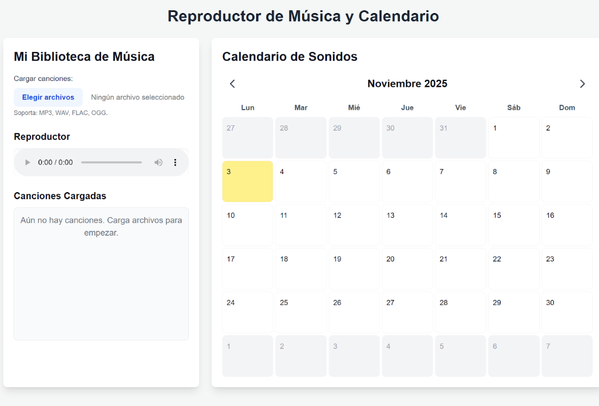
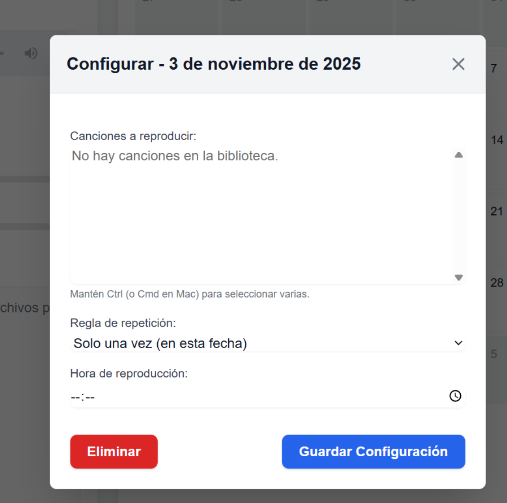
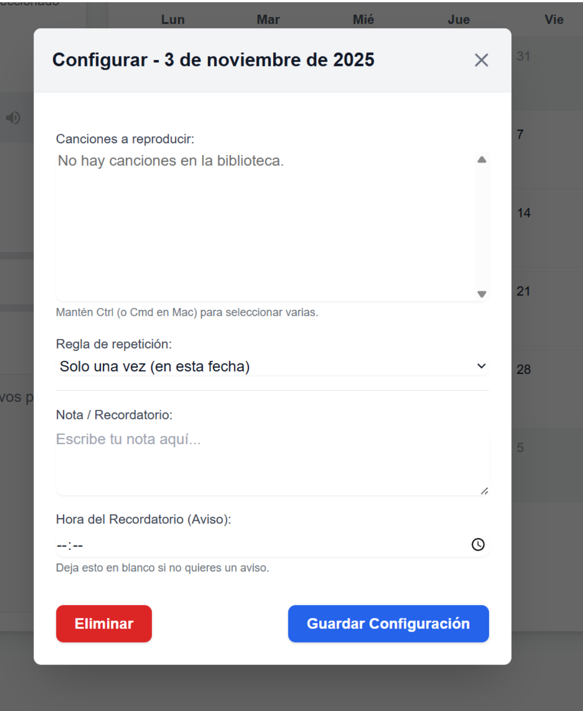

Prompt 1
Crear el reproductor de música y calendario base.
Texto exacto:
Eres una IA experta en desarrollo front-end con dominio avanzado en HTML5, CSS3 y JavaScript. Tu objetivo es construir aplicaciones web interactivas, optimizadas y multiplataforma en un único archivo HTML, incluyendo el CSS y JS dentro del mismo.
Vas a crear un reproductor de música local. Tiene soporte para formatos variados (MP3, WAV, FLAC, OGG).
A este le vas a añadir un calendario, este tiene los días registrados(1-31) de cada mes. El usuario podrá hacer que cuando pulse un día del mes se reproduzca unos audios, además se desplegá una pestaña, que permitirá configurar que audio o audios suenan al momento de tocarlo, se podrá configurar su tiempo de reproducción (Se ajusta que suene cada viernes o cada dia especifico o cada mes durante un tiempo x) que te diga el usuario
Ve preparando para que sea multiplataforma y sin erroresFoto de lo generado:
Prompt 2
Añadir controles de audio y gestión de canciones.
Texto exacto:
Añade un botón para Eliminar las canciones de un día, ajusta que se muestre el archivo reproduciendo, que se pueda ajustar el sonido y configuraciones de este como graves y agudos. Haz que cuando se reproduzca desde el calendario se use el reproductor de la biblioteca musical , para poder usar sus ajustes de sonido.Foto de lo generado:
Prompt 3
Añadir notas y recordatorios al calendario.
Texto exacto:
Añade la capacidad de añadir notas en el calendario, se sigue pudiendo poner texto, pero también añadir notas y recordatorios. Estos recordatorios aparecerán en la pantalla a forma de mensaje cuando sea la hora que el usuario ha puesto como recordatorio, las notas también se guardan semanal o mensualmente como las canciones.Foto de lo generado:
Prompt 4
Añadir control de velocidad y gestión de listas de reproducción.
Texto exacto:
Añade la capacidad de configurar el audio en velocidades(x1.25, x1.5, x1,75 y x2) y para hacerlo más lento. Haz que el usuario pueda crear carpetas (listas de reproducción) y que se puedan subir estas listas a un dia y que se reproduzcan los audios en cola y en bucle. Añade que se eliminen las listas de reproducción manually